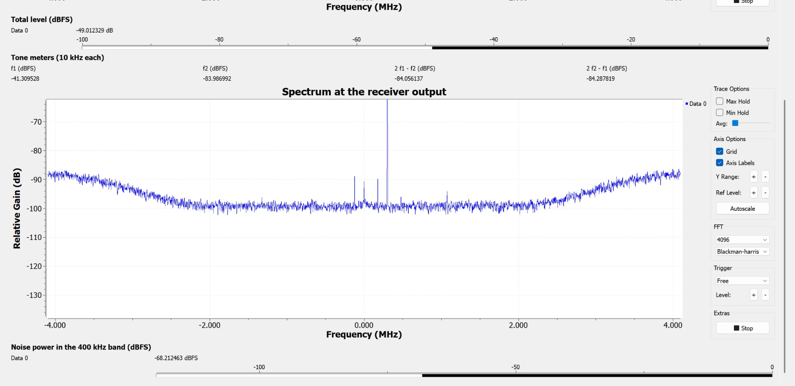

روش اندازهگیری
فرستنده از طریق تضعیفگر ثابت به گیرنده وصل شد. بهرهٔ RF گیرنده روی و فرکانس مرکزی فلوگراف lab02_combined روی قرار داشت. ابتدا حالت Off (zeros) برای خواندن کف نویز نوار دهکیلوهرتزی ثبت شد. سپس حالت One tone یک تن با آفست ساخت که در این تنظیم معادل در RF است.
تضعیف TX از تا با گام کاهش یافت و یک قرائت دیگر در ثبت شد. در هر گام، سطح تن اصلی از نوارسنج و سطح کل از پنل Total level خوانده شد.
تبدیل توان ورودی و محاسبهٔ بهره
با دامنهٔ دیجیتال و تلفات مسیر شامل تضعیفگر و کابل، رابطهٔ (۲) دستورکار بهصورت زیر به کار رفت.
تبدیل به dBFS از مرجع بخش اول در همین تنظیم بهره استفاده میکند. ستونهای توان ورودی و بهره برآوردهای وابسته به این مرجع و مدل اسمی توان فرستندهاند.
| (dB) | (dBm) | (dBFS) | (dBFS) | (dB) | (dBFS) |
|---|---|---|---|---|---|
جدول ۵ هر نه نقطهٔ اندازهگیریشده را دارد و با دامنهای که دستیار آموزشی تعیین کرد کامل است. ردیف در برگهٔ ثبت و نمودار آمده است. برای محافظت از دستگاه، تضعیف پس از این نقطه کمتر نشد.
فرکانس از کادر تنظیمات شکل ۳ و نسخهٔ ارسالی جدول خوانده شد. یکی از رونویسیهای یادداشت جلسه مقدار را دارد و رقمهای فرکانس در دستنویس همپوشانی دارند.
| شکل | ||||||
|---|---|---|---|---|---|---|
| ۲ | ||||||
| ۳ | ||||||
| ۴ |
نمودار جدول ۵

بررسی تراکم یکدسیبل
چهار نقطهٔ نخست در تضعیفهای ۸۰ تا بهرهٔ سیگنالکوچک را در مرجع جدول میدهند. خط سیگنالکوچک برحسب تضعیف و میزان افت توان نسبت به آن از روابط زیر به دست میآیند.
شرط تراکم یکدسیبل است. در همهٔ نقاط اندازهگیریشده، بین و بود. در گام پایانی، کاهش تضعیف از ۴۵ به سطح تن را نیم دسیبل بالا برد و خروجی به مقدار روی خط سیگنالکوچک رسید. بنابراین تا بیشترین ورودی آزمودهشده، معادل اسمی یا ، مشاهده نشد.
پاسخ پرسش ۳
بهدلیل مشاهده نشدن تراکم یکدسیبل، سطح خروجی در نقطهٔ تراکم تعیین نشد. در آخرین گام، سطح تن اصلی و سطح کل بود. اگر افت بهره همزمان با رسیدن نمونهها به تماممقیاس و برش آنها رخ دهد، محدودیت مبدل محتمل است. وقوع افت بهره در سطحی بهمراتب پایینتر میتواند نشانهٔ محدودیت طبقههای آنالوگ باشد. دادههای این جاروب برای تعیین عامل محدودکننده کافی نیستند.
مشاهدات طیف گیرنده
در شکل ۴ تن اصلی بالاتر از کفِ همان نوار در شکل ۲ است. چند خط ضعیف دیگر نیز در طیف گیرنده دیده میشوند. خواندن نوارسنجهای ، و در حوالی کف حالت خاموش باقی مانده است. آستانهٔ ظهور محصولات ناخواسته به ثبت طیف در گامهای مختلف نیاز دارد و با این تصاویر تعیین نشد.
خواندنهای لحظهای شکلهای ۳ و ۴ با ثبت دفتر در گام اختلاف دارند. همچنین Total level در شکل ۴ حدود پایینتر از خواندن نوار تن است. تحلیل تراکم و نمودار بر ثبتهای جاروب در جدول ۵ تکیه دارند.
تصاویر فلوگراف و گیرنده



ثبت اجرای مراحل
گیرنده در بهرهٔ تنظیم شد و پس از ثبت کف نوار ، تن در آفست به آن اعمال شد.
جاروب با گامهای و یک گام پایانی انجام شد. نوارسنج ، سطح کل و تصاویر طیف برای ارزیابی خطهای ناخواسته بررسی شدند.
قویترین ورودی آزمودهشده طبق مدل بود و حد ورودی رعایت شد.
بهرهٔ هر گام و خط سیگنالکوچک محاسبه شدند. نتیجهٔ جاروب، رسیدن به سطح برای تن اصلی در آخرین نقطه با افت کمتر از یک دسیبل است.